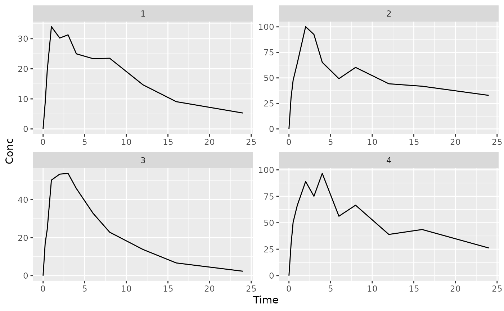

library(mrgmisc) # for binning and other functions
library(ggplot2) #plotting
library(purrr) # dataset to handle lists
suppressMessages(suppressWarnings(library(dplyr)))Messy plot can’t see individuals well
ggplot(dat, aes(x = Time, y = Conc, group= ID)) +
geom_line() +
facet_wrap(~ID, scales= "free")What we’d like to be able to do is split up into ‘bins’ of specified numbers of individuals to then plot out multiple plots
# this will automatically create a column of bins such that the
# specified number of individuals is in each bin, in this case
# 9 ids per bin
# split the original dataset into subdatasets corresponding to each bin (list of dataframes)
split_dat <- dat %>%
mutate(PLOTS = ids_per_plot(ID, 4)) %>% # default is 9 per subplot
split(.[["PLOTS"]])To handle plotting each subdataframe, you need to wrap your normal
ggplot into a function. You will then apply this function with
map to each subdataframe. So in this case it is just like a
normal plot, but wrapped up in a function, which takes 1 argument (the
dataframe) and outputs the plot
p_conc_time <- function(df) {
ggplot(df, aes(x = Time, y = Conc, group= ID)) +
geom_line() +
facet_wrap(~ID, scales= "free")
}To apply the above function we use map from
purrr
## $`1`
##
## $`2`##
## $`3`##
## $`4`##
## $`5`
sessioninfo::session_info()## ─ Session info ───────────────────────────────────────────────────────────────
## setting value
## version R version 4.1.3 (2022-03-10)
## os Ubuntu 18.04.6 LTS
## system x86_64, linux-gnu
## ui X11
## language en
## collate C.UTF-8
## ctype C.UTF-8
## tz America/New_York
## date 2024-04-22
## pandoc 2.17.1.1 @ /usr/lib/rstudio-server/bin/quarto/bin/ (via rmarkdown)
##
## ─ Packages ───────────────────────────────────────────────────────────────────
## package * version date (UTC) lib source
## bslib 0.7.0 2024-03-29 [1] CRAN (R 4.1.3)
## cachem 1.0.8 2023-05-01 [1] CRAN (R 4.1.3)
## cli 3.6.2 2023-12-11 [1] CRAN (R 4.1.3)
## colorspace 2.1-0 2023-01-23 [1] CRAN (R 4.1.3)
## desc 1.4.3 2023-12-10 [1] CRAN (R 4.1.3)
## digest 0.6.35 2024-03-11 [1] CRAN (R 4.1.3)
## dplyr * 1.1.4 2023-11-17 [1] CRAN (R 4.1.3)
## evaluate 0.23 2023-11-01 [1] CRAN (R 4.1.3)
## fansi 1.0.6 2023-12-08 [1] CRAN (R 4.1.3)
## farver 2.1.1 2022-07-06 [1] CRAN (R 4.1.3)
## fastmap 1.1.1 2023-02-24 [1] CRAN (R 4.1.3)
## fs 1.6.3 2023-07-20 [1] CRAN (R 4.1.3)
## generics 0.1.3 2022-07-05 [1] CRAN (R 4.1.3)
## ggplot2 * 3.5.0 2024-02-23 [1] CRAN (R 4.1.3)
## glue 1.7.0 2024-01-09 [1] CRAN (R 4.1.3)
## gtable 0.3.4 2023-08-21 [1] CRAN (R 4.1.3)
## highr 0.10 2022-12-22 [1] CRAN (R 4.1.3)
## htmltools 0.5.8.1 2024-04-04 [1] CRAN (R 4.1.3)
## htmlwidgets 1.6.4 2023-12-06 [1] CRAN (R 4.1.3)
## jquerylib 0.1.4 2021-04-26 [1] CRAN (R 4.1.3)
## jsonlite 1.8.8 2023-12-04 [1] CRAN (R 4.1.3)
## knitr 1.46 2024-04-06 [1] CRAN (R 4.1.3)
## labeling 0.4.3 2023-08-29 [1] CRAN (R 4.1.3)
## lifecycle 1.0.4 2023-11-07 [1] CRAN (R 4.1.3)
## magrittr 2.0.3 2022-03-30 [1] CRAN (R 4.1.3)
## memoise 2.0.1 2021-11-26 [1] CRAN (R 4.1.3)
## mrgmisc * 0.1.5 2024-04-15 [1] local (/data/mrgmisc_0.1.5.tar.gz)
## munsell 0.5.1 2024-04-01 [1] CRAN (R 4.1.3)
## pillar 1.9.0 2023-03-22 [1] CRAN (R 4.1.3)
## pkgconfig 2.0.3 2019-09-22 [1] CRAN (R 4.1.3)
## pkgdown 2.0.8 2024-04-10 [1] CRAN (R 4.1.3)
## purrr * 1.0.2 2023-08-10 [1] CRAN (R 4.1.3)
## R6 2.5.1 2021-08-19 [1] CRAN (R 4.1.3)
## ragg 1.3.0 2024-03-13 [1] CRAN (R 4.1.3)
## Rcpp 1.0.12 2024-01-09 [1] CRAN (R 4.1.3)
## renv 0.14.0 2021-07-21 [1] CRAN (R 4.1.0)
## rlang 1.1.3 2024-01-10 [1] CRAN (R 4.1.3)
## rmarkdown 2.26 2024-03-05 [1] CRAN (R 4.1.3)
## rstudioapi 0.16.0 2024-03-24 [1] CRAN (R 4.1.3)
## sass 0.4.9 2024-03-15 [1] CRAN (R 4.1.3)
## scales 1.3.0 2023-11-28 [1] CRAN (R 4.1.3)
## sessioninfo 1.2.2 2021-12-06 [1] CRAN (R 4.1.3)
## systemfonts 1.0.6 2024-03-07 [1] CRAN (R 4.1.3)
## textshaping 0.3.7 2023-10-09 [1] CRAN (R 4.1.3)
## tibble 3.2.1 2023-03-20 [1] CRAN (R 4.1.3)
## tidyselect 1.2.1 2024-03-11 [1] CRAN (R 4.1.3)
## utf8 1.2.4 2023-10-22 [1] CRAN (R 4.1.3)
## vctrs 0.6.5 2023-12-01 [1] CRAN (R 4.1.3)
## withr 3.0.0 2024-01-16 [1] CRAN (R 4.1.3)
## xfun 0.43 2024-03-25 [1] CRAN (R 4.1.3)
## yaml 2.3.8 2023-12-11 [1] CRAN (R 4.1.3)
##
## [1] /data/mrgmisc/renv/library/R-4.1/x86_64-pc-linux-gnu
## [2] /tmp/RtmpnWuw8h/renv-system-library
## [3] /tmp/RtmpSfLdeO/renv-system-library
##
## ──────────────────────────────────────────────────────────────────────────────